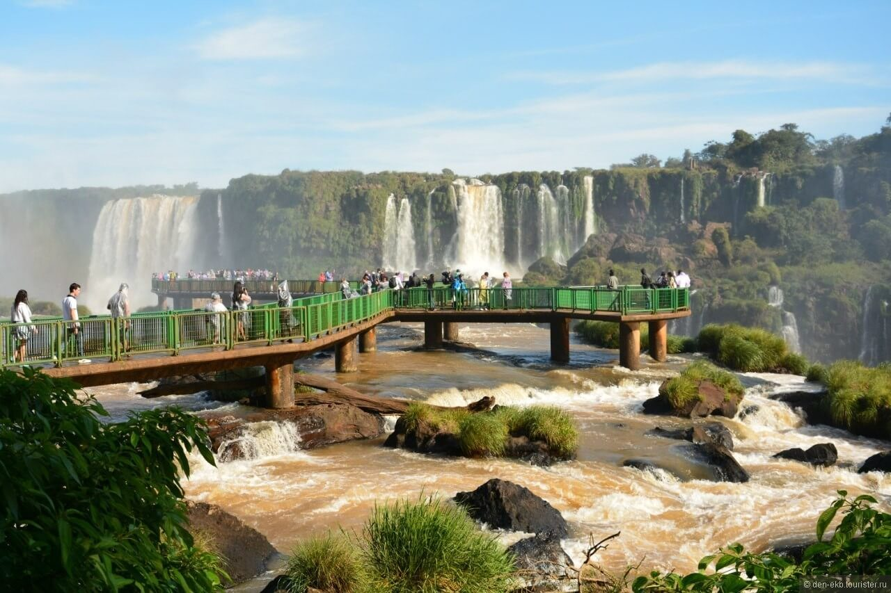
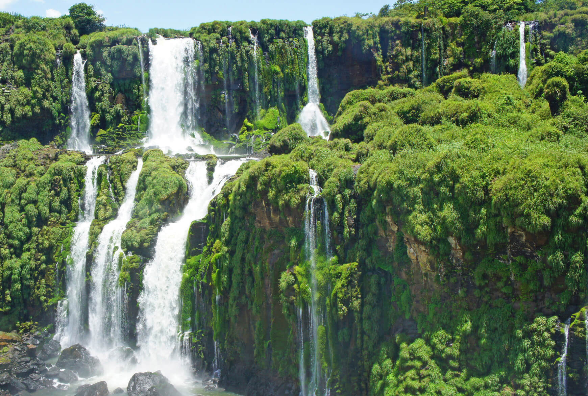

ВОДОПАДЫ ИГУАСУ
Водопады Игуасу — одно из новых семи природных чудес мира. Название переводится с языка индейцев гуарани как «Большая вода».

Великолепная цепь водопадов из примерно 275 потоков на реке Игуасу на границе Аргентины и Бразилии растянулась на целых 2700 метров. Средняя высота водопадов Игуасу – 64 метра, а высота самого большого потока, который носит название Глотка Дьявола – 82 метра.
Найти водопады Игуасу на карте легко – они расположены на реке Игуасу и именно по ним проходит граница Аргентины и Бразилии. Вокруг раскинулся огромный национальный парк, который в обеих странах носит одно и то же название – Игуасу. Посетить водопады можно и с аргентинской, и с бразильской стороны.

С водопадами связана красивая легенда, согласно которой Бог хотел жениться на красивой девушке по имени Naipu, но она сбежала со своим возлюбленным на лодке. Тогда разгневанный Бог разрезал реку, создав водопады на пути влюбленных. Юноша превратился в одинокую пальму, а девушка в скалу. Столь частые на водопадах радуги проходят через пальму и скалу, и тогда кажется, будто влюбленные нежно обнимают друг друга.
В сезон дождей водопады Игуасу проливают до 13 000 000 (тринадцать миллионов) литров воды в секунду! Высота, на которую поднимается водяная пыль над самым большим водопадом Игуасу – Глоткой Дьявола, равняется 150 метрам.

С обеих сторон границы у водопадов организованы заповедники: Национальный парк Игуасу в Аргентине (основан в 1909 г., площадь 67 тыс. га) и Национальный парк Игуасу в Бразилии (основан в 1939 г., площадь 185 тыс. га.). В 1984 г. водопады Игуасу включены в список Всемирного наследия ЮНЕСКО, а в 2011 г. признаны одним из семи природных чудес мира.
